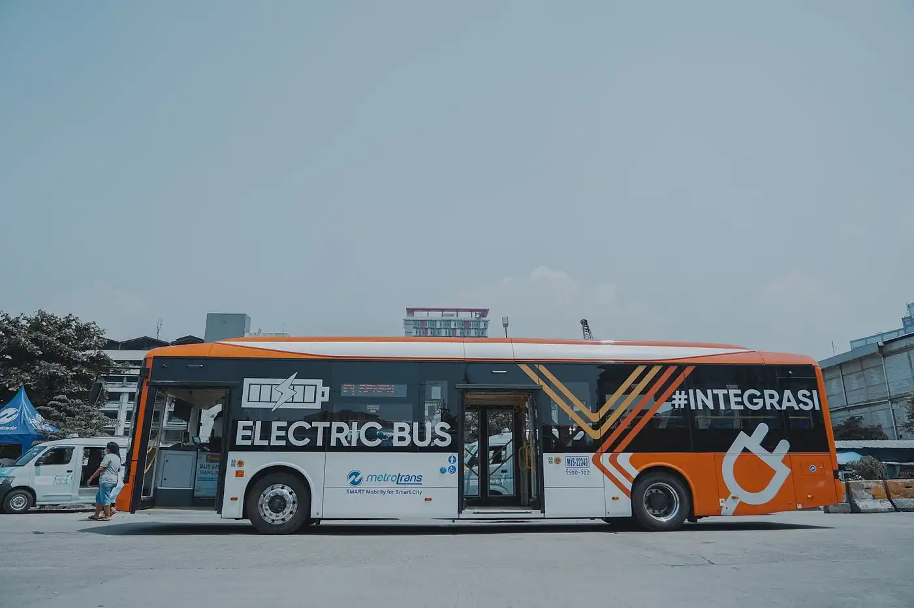

Inovasi Teknologi Indonesia |

Bus Listrik Transjakarta: Mobilitas bebas emisiPemerintah Provinsi DKI Jakarta bekerja sama dengan PT Transjakarta secara resmi meluncurkan 30 bus listrik bebas emisi, menandai kehadiran bus listrik pertama di Jakarta. Inisiatif ini bertujuan untuk mengurangi polusi udara dan meningkatkan kualitas udara di ibu kota. Dalam upaya untuk menyediakan transportasi publik yang lebih ramah lingkungan, Bus Listrik Transjakarta menawarkan beberapa keunggulan yang signifikan:
Keberadaan Bus Listrik Transjakarta merupakan langkah penting dalam mengurangi tingkat polusi dan menjaga keberlanjutan lingkungan di Jakarta. Inisiatif ini tidak hanya memberikan solusi transportasi yang ramah lingkungan, tetapi juga mendorong penggunaan kendaraan listrik di sektor transportasi publik. Diharapkan, penggunaan bus listrik ini akan menginspirasi kota-kota lain untuk mengadopsi teknologi ramah lingkungan dalam sistem transportasi mereka, mengurangi dampak negatif terhadap lingkungan, dan meningkatkan kualitas hidup masyarakat. Kunjungi smartcity jakarta |
Copyright © 2023 Noni selfia. All rights reserved.231011700150 - SIFE 003 - Sistem informasi |